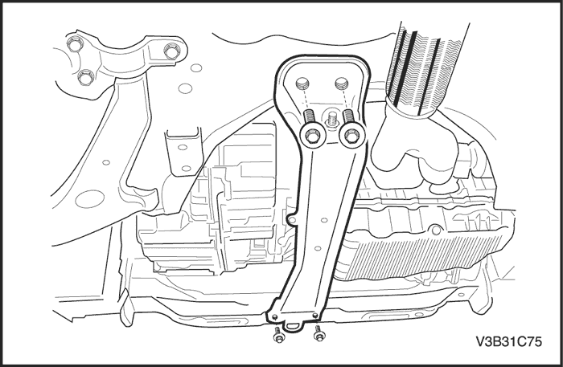

MANTENIMIENTO Y REPARACIÓN
servicio con vehículo en marcha


Procedimiento de comprobación del nivel de aceite de la caja de cambios
Importante: No es necesario comprobar el nivel de aceite a menos que se haya sustituido o que se sospeche de la presencia de una fuga. Compruebe el nivel de aceite sólo cuando el motor está apagado. Asegúrese de que el vehículo está nivelado.
- Levante y sujete el vehículo.
- Quite el tapón de comprobación del nivel de aceite.
- Compruebe que el aceite está nivelado con la abertura.
- Si la caja de cambios no tiene la cantidad adecuada de aceite, añada SAE75W90 hasta que comience a rebosar por el tapón de llenado.
- Instale el tapón de comprobación del nivel de aceite.
Apretar
Apriete el tapón de comprobación del nivel de aceite hasta 6 N•m (53 lb-pulg.) + 45°~180°.
- Baje el vehículo.
Sustitución del aceite de la caja de cambios
Precaución: El aceite de la caja de cambios está caliente. Debe prestarse atención para evitar lesiones personales cuando se vacía el líquido de la caja de cambios.
- Levante y sujete el vehículo.
- Quite el tapón de drenaje de la caja de cambios y deje que se vacíe todo el aceite.
- Quite el tapón de comprobación del nivel de aceite.
- Limpie e instale el tapón de vaciado de la caja de cambios.
Apretar
Apriete el tapón de vaciado de la caja de cambios hasta 6 N•m (53 lb-pulg.) + 45°~180°.
- Añada aceite de caja de cambios SAE75W90 hasta que rebose por el tapón de comprobación del nivel de aceite.
- Limpie y coloque el tapón de comprobación del nivel de aceite.
Apretar
Apriete el tapón de comprobación del nivel de aceite hasta 6 N•m (53 lb-pulg.) + 45°~180°.
- Baje el vehículo y compruebe si funciona todo correctamente.
|
Especificaciones del aceite
|
SAE75W90
|
|
Capacidad de líquido
|
1,6L (1,69 qt)
|

Alojamiento de la palanca de mando del cambio de marchas
Procedimiento de desmontaje
- Desconecte el cable negativo de la batería.
- Desmonte la consola. Consulte la Sección 9G, Guarnecido interior.
- Desconecte los cable de mando del alojamiento de la palanca de mando del cambio de marchas. Consulte el apartado "Cable de mando del cambio de marchas" de esta sección.
- Quite las tuercas y los tornillos del alojamiento de la palanca de mando del cambio de marchas.
- Desmonte el alojamiento de la palanca de mando del cambio.

procedimiento de montaje
- Instale el alojamiento de la palanca de mando del cambio.
- Coloque las tuercas y los tornillos del alojamiento de la palanca de mando del cambio de marchas.
Apretar
Apriete los tornillos del alojamiento de la palanca de mando del cambio de marchas hasta 8 N•m (71 lb-pulg.).
- Conecte los cables del cambio en el alojamiento de la palanca de mando del cambio de marchas y ajuste el cable. Consulte el apartado "Cable de mando del cambio de marchas" de esta sección.
- Monte la consola. Consulte la Sección 9G, Guarnecido interior.
- Conecte el cable negativo de la batería.

Cable de control de cambios
Procedimiento de desmontaje
- Desconecte el cable negativo de la batería.
- Desmonte la consola. Consulte la Sección 9G, Guarnecido interior.
- Desmonte los bloqueos de ajuste del cable de mando del cambio de marchas (1).
- Desconecte los cables de mando (2) del soporte del alojamiento de la palanca de mando del cambio de marchas.
- Desconecte los cables de mando de los ajustadores mando del cambio de marchas.

- Desmonte los cables de mando del cambio (1) de la caja de cambios utilizando una herramienta adecuada.
- Desmonte los cables (2) del soporte del cable de mando del cambio de marchas.

- Desmonte el pasacables del panel del salpicadero.
- Desconecte los cables de mando del cambio de marchas del vehículo.
procedimiento de montaje
- Monte los cable de mando del cambio de marchas en el vehículo.
- Monte el pasacables en el panel del salpicadero. Asegúrese de que el pasacables del cable de mando del cambio de marchas está bien asentado y que la flecha del pasacables apunta hacia arriba.
- Coloque los cables (2) en el soporte del cable de mando del cambio de marchas.
- Monte los cable de mando del cambio de marchas (1) en la caja de cambios.
- Coloque la caja de cambios en punto muerto.

- Conecte los cables de mando del cambio de marchas en los ajustadores de mando del cambio de marchas.
- Monte los cables de mando del cambio en el soporte del alojamiento de la palanca de mando del cambio de marchas.

- Coloque la palanca de cambio en punto muerto.
- Con los extremos del cable del cambio en los ajustadores, ajuste los cables presionando el pasador de bloqueo de punto muerto. Mueva el selector ligeramente para centrar el pasador de bloqueo de punto muerto.

- Presione y bloquee los bloqueos de ajuste del cable de mando del cambio de marchas.
- Vuelva a colocar el pasador de bloqueo en su posición original.
- Monte la consola. Consulte la Sección 9G, Guarnecido interior.
- Conecte el cable negativo de la batería.
Ajuste del cable de control de cambios
- Desconecte el cable negativo de la batería.
- Coloque la caja de cambios en punto muerto.
- Conecte los cables de mando del cambio de marchas en los ajustadores de mando del cambio de marchas.
- Monte los cables de mando del cambio en el soporte del alojamiento de la palanca de mando del cambio de marchas.
- Coloque la palanca de cambio en punto muerto.
- Ajuste el cable presionando el pasador de bloqueo de punto muerto. Mueva el selector ligeramente para centrar el pasador de bloqueo de punto muerto.
- Presione y bloquee los bloqueos de ajuste del cable de mando del cambio de marchas.
- Vuelva a colocar el pasador de bloqueo en su posición original.
- Conecte el cable negativo de la batería.

Engranaje arrastrado del velocímetro
Procedimiento de desmontaje
- Desenchufe el conector de cableado eléctrico del engranaje conducido del velocímetro.

- Quite el tornillo del engranaje conducido del velocímetro.

- Desmonte el engranaje conducido del velocímetro.
procedimiento de montaje
- Monte el engranaje conducido del velocímetro.
- Coloque el tornillo del engranaje conducido del velocímetro.
Apretar
Apriete el tornillo del engranaje conducido del velocímetro hasta 3-5 N•m (27-44 lb-pulg.).
- Enchufe el conector de cableado eléctrico del engranaje conducido del velocímetro.

Conjunto de transeje
Herramientas necesarias
Fijación del soporte del conjunto motor DW110-060
Procedimiento de desmontaje
- Desconecte el cable negativo de la batería.
- Desmonte la tapa del motor, el conducto del filtro de aire y el conjunto del alojamiento del filtro de aire. Consulte la Sección 1C, Mecánica del motor.
- Desenchufe el conector de cableado eléctrico del interruptor de la luz de marcha atrás.
- Desenchufe el conector de cableado eléctrico del engranaje conducido del velocímetro.

- Desmonte los cables de mando del cambio (1) de la caja de cambios utilizando una herramienta adecuada.
- Desmonte los cables (2) del soporte del cable de mando del cambio de marchas.

- Quite los tornillos del soporte del cilindro de desembrague y desmonte dicho soporte.

- Quite los tres tornillos superiores de fijación de la caja de cambios.

- Instale el DW110-060.
- Levante y apoye el vehículo adecuadamente.
- Desmonte la cubierta inferior del motor. Consulte la sección 9N, Bastidor y bajos de la carrocería.

- Desmonte el tubo de escape delantero. Consulte la Sección 1G, Sistema de escape del motor.

- Desmonte el larguero central. Consulte la sección 9N, Bastidor y bajos de la carrocería.

- Quite los tres tornillos del soporte de fijación trasero de la caja de cambios y desmonte dicho soporte.

- Quite los tres tornillos del soporte del casquillo del amortiguador delantero y dicho soporte.
- Desmonte el travesaño izquierdo de impactos de la suspensión delantera. Consulte la Sección 2C, Suspensión delantera.
- Desmonte los palieres. Consulte la Sección 3B, Árbol de transmisión de la caja de cambios manual.

- Apoye el conjunto de la caja de cambios utilizando el gato de apoyo.

- Quite los siete tornillos inferiores de fijación de la caja de cambios.

- Quite los cuatro tornillos superiores del soporte de fijación de la caja de cambios.
- Desmonte el conjunto de la caja de cambios del vehículo con cuidado.
procedimiento de montaje
- Instale la caja de cambios en el vehículo y apoye el conjunto de la caja de cambios utilizando el gato de apoyo.
- Coloque los cuatro tornillos de la parte superior izquierda del soporte de fijación de la caja de cambios.
Apretar
Apriete los tres tornillos superiores del soporte de fijación de la caja de cambios hasta 40 N•m (30 lb-pie).
- Coloque los siete tornillos inferiores de fijación de la caja de cambios.
Apretar
Apriete los tornillos inferiores de fijación de la caja de cambios hasta 27-35 N•m (20-26 lb-pie).
- Retire el gato de sustentación de la caja de cambios.
- Monte los palieres. Consulte la Sección 3B, Árbol de transmisión de la caja de cambios manual.
- Monte el travesaño izquierdo de impactos de la suspensión delantera. Consulte la Sección 2C, Suspensión delantera.
- Coloque los tres tornillos y el soporte del casquillo del amortiguador delantero.
Apretar
Apriete los tornillos del soporte del amortiguador delantero hasta 65 N•m (48 lb-pie).
- Monte el soporte de fijación trasero de la caja de cambios y coloque los tres tornillos.
Apretar
Apriete los tornillos del soporte de fijación trasero de la caja de cambios hasta 65 N•m (48 lb-pie).
- Monte el larguero central. Consulte la sección 9N, Bastidor y bajos de la carrocería.
- Monte el tubo de escape delantero. Consulte la Sección 1G, Sistema de escape del motor.
- Monte la cubierta inferior del motor. Consulte la sección 9N, Bastidor y bajos de la carrocería.
- Baje el vehículo.
- Desmonte el DW110-060 del motor.
- Coloque los tres tornillos superiores del soporte de fijación de la caja de cambios.
Apretar
Apriete los tornillos superiores de fijación de la caja de cambios hasta 60-85 N•m (44-63 lb-pie).
- Monte el soporte del cilindro de desembrague con sus tornillos.
Apretar
Apriete los tornillos del soporte del cilindro de desembrague hasta 15 N•m (11 lb-pie).
- Monte los cables de mando del cambio (2) dentro del soporte del cable de mandos del cambio de marchas.
- Monte los cable de mando del cambio de marchas (1) en la caja de cambios.
- Enchufe el conector de cableado eléctrico del engranaje conducido del velocímetro.
- Enchufe el conector eléctrico del interruptor de la luz de marcha atrás.
- Instale la tapa del motor, el conducto del filtro del aire y el conjunto del alojamiento del filtro del aire. Consulte la Sección 1C, Mecánica del motor.
- Conecte el cable negativo de la batería.
- Realice una purga de aire. Consulte la sección 5C, Embrague.
- Ajuste el cable de mando del cambio de marchas Consulte el apartado "Ajuste del cable de mando del cambio de marchas" de esta sección.
- Compruebe el nivel de aceite. Consulte el apartado "Procedimiento de comprobación del aceite de la caja de cambios" de esta sección.
 |
|
 |
|
| © Copyright Chevrolet Europe. Reservados todos los derechos |